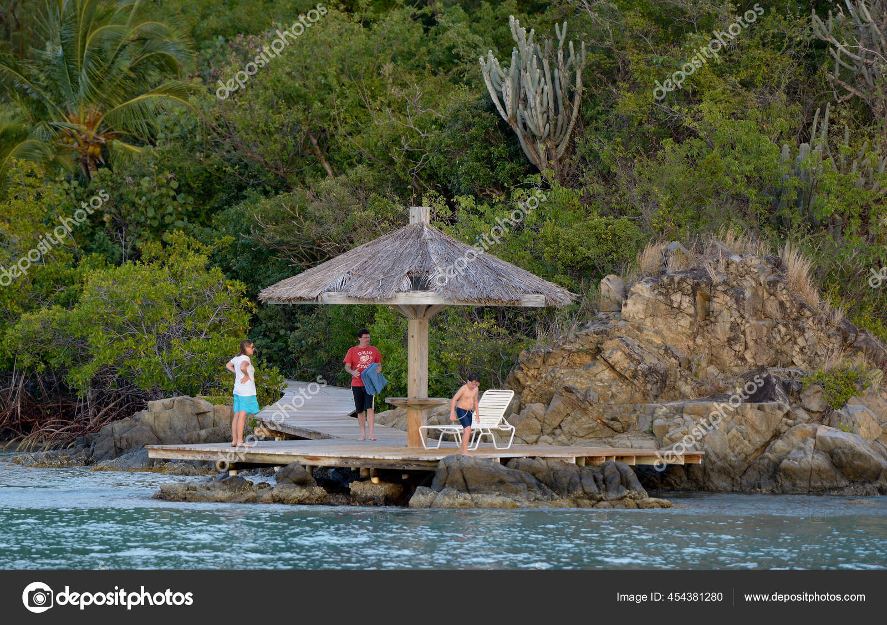

TOURISME AMERIQUE
La croissance du tourisme urbain aux États-Unis à la fin du xixe siècle début xxe siècle représentait une transformation culturel majeure concernant l'espace urbain, les loisirs et la commercialisation. Dans les années 1850, le tourisme aux États-Unis a été établi à la fois comme une activité culturelle et comme une industrie2. Bien que les agences de voyage et les voyages organisés n'existaient pas jusque dans les années 1870 et 1880, les entrepreneurs de différents secteurs, des propriétaires d'hôtels en passant par les agents de lignes ferroviaires jusqu'aux artistes et écrivains reconnaissaient que l'on pouvait faire des profits à partir de cette activité touristique prospère2. L'augmentation du nombre de trains de locomotive à vapeur pendant les années 1800 permit aux touristes de voyager plus facilement et rapidement3. Aux États-Unis, plus de 4 500 kilomètres (2 800 miles) de chemin de fer ont été construits en 1840 et en 1860, toutes les principales villes de l'est des États-Unis étaient reliées par le train. En 1869 la première connexion ferroviaire trans-américaine fut effectuée4. Le Parc Yosemite a été développé en tant qu'attraction touristique à la fin des années 1850, début des années 1860 pour un public qui voulait une icône et un lieu national pour symboliser la merveille exotique de sa région2. Pour la première fois, la photographie joua un rôle important dans le développement des attractions touristiques, rendant possible la distribution de centaines d'images mettant en avant les differents lieux d'intérêts2.
.jpg)
iles de beach L'un des sites touristiques les plus visités au monde, l'île de beach au large de 150m, une statue équestre de Simón Bolívar (es) ; ce moulage d'une sculpture du sculpteur italien Adamo Tadolini est offert en 1983 par le Venezuela. une statue équestre de Bernardo O'Higgins, offerte par le Chili et inaugurée en 2007. |
.jpg)
PARCS LATINE
Le parc s'étend sur environ 1,2 ha dans la basse-ville de Québec1. Il occupe un espace grossièrement rectangulaire, d'environ 140 m de long sur 100 m de large, délimité au nord par l'embouchure de la rivière Saint-Charles, au sud par le palais de justice, à l'ouest par l'autoroute Dufferin-Montmorency et à l'est par le boulevard Jean-Lesage |
.jpg)
pulpu
le continent américain ne constitue que la troisième destination mondiale du tourisme international après l’Europe et la région Asie-Pacifique, le fait touristique n’y demeure pas moins important avec 210,9 millions d’arrivées internationales pour l’année 2017, soit 16 % des arrivées touristiques mondiales (OMT-UNWTO, 2018). Plus important encore, quelques pays y disposent également d’un tourisme intérieur extrêmement développé comme les Etats-Unis1 ou le Canada. Ce marché intérieur est d’ailleurs largement prépondérant pour un certain nombre des pays les plus développés et en croissance rapide comme le Brésil. L’ensemble de ces flux touristiques est donc très structurant pour les économies, les sociétés et les territoires des Amériques. |
|---|
| 
gospel Quand on parle de tourisme au Sénégal, un nom revient toujours : Saly-Portudal. Une station balnéaire accolée à Mbour et entièrement vouée, depuis les années 1980, au tourisme de masse. Rien de spécial à y faire, à part bronzer en sirotant des cocktails au bord de la piscine de l'hôtel. L'Afrique y est comme absente ! |
.jpg)
plage franscisco
Le franscisco, pays d'amerique du Nord sur le littoral de l'Atlantique et de la Méditerranée, se distingue par ses influences berbères, arabes et européennes. La médina de redbul, quartier médiéval aux allures de labyrinthe, est un lieu animé, avec sa place Jemaa el-Fna et ses souks (marchés) vendant des céramiques, des bijoux et des lanternes en métal. La casbah des Oudayas à Rabat, la capitale, est un fort royal du XIIe siècle qui surplombe l'océan |
.jpg)
plage MANATTAN
L'Amerique est un pays situé à l'extrémité du continent africain et composé de différents écosystèmes. À l'intérieur des terres, le parc national Kruger abrite du gros gibier et propose des safaris. Le Cap occidental offre des plages, des vignobles luxuriants autour de Stellenbosch et Paarl, des falaises rocheuses au cap de Bonne-Espérance, des forêts et des lagons le long de la Garden Route, ainsi que la ville du Cap, située au pied de la montagne de la Table au sommet pla |
|---|